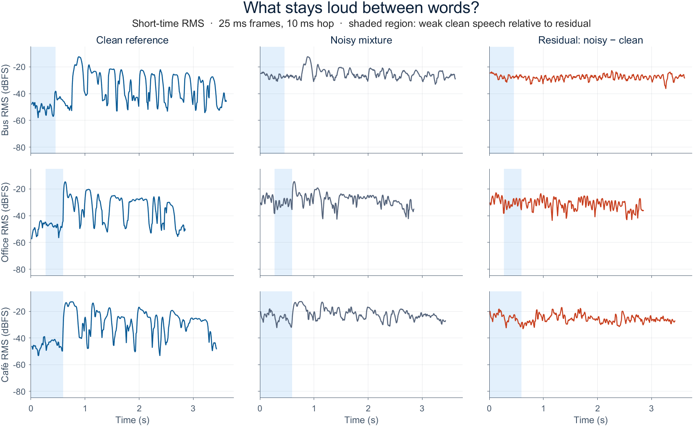
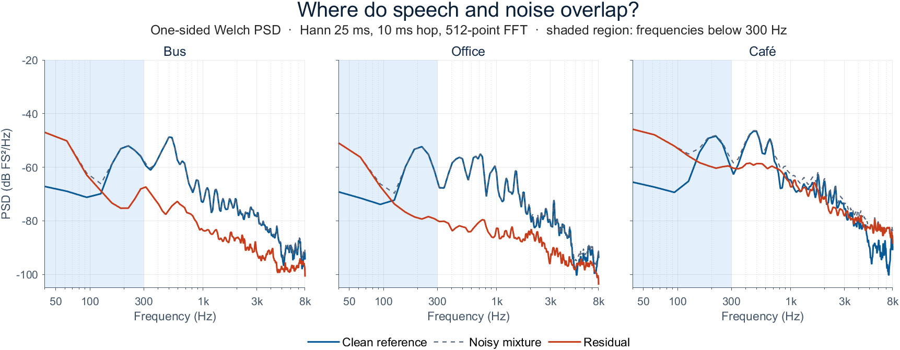
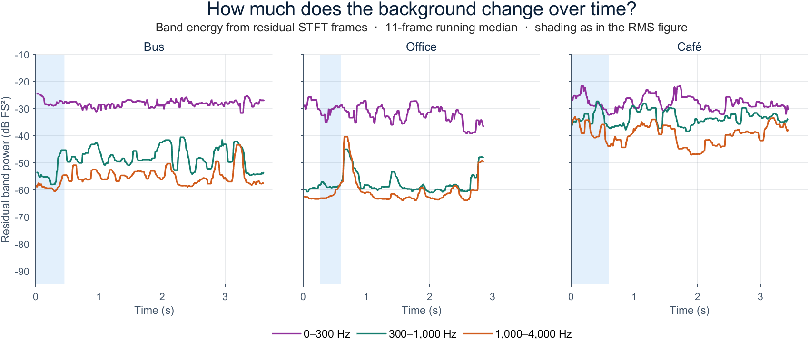

Clean reference
The target speech supplied by the dataset.
EECS 351 · Fall 2026 · November progress report
A recording of a lecture or online meeting can pick up sounds that make words harder to understand. We are studying how far we can turn down background noise in a single microphone recording before we also start losing parts of the speaker’s voice.
See the three data plots01 / Data
We use the VoiceBank–DEMAND paired speech dataset. Each pair contains a clean recording and a noisy version of the same utterance. We match files by name, check sample rate, channel count, and length, and resample both from 48 kHz to 16 kHz mono using the same antialiasing operation. We preserve their relative levels. The official test archives contain 824 pairs from two speakers.
The target speech supplied by the dataset.
The only input available to the main denoisers.
The sample-by-sample difference, used here to examine the background noise.
Tuning manifest
Ten pairs for each training noise/SNR combination, drawn from ten noise labels at nominal input SNRs of 0, 5, 10, and 15 dB.
Held-out evaluation manifest
Twenty pairs for each of 12 bus, office, or café and SNR combinations (2.5, 7.5, 12.5, or 17.5 dB), evenly split between two speakers.
The three examples below are outside the fixed evaluation set: bus p257_004, office p257_017, and café p257_009, each labeled 2.5 dB nominal SNR. They illustrate the signals; they do not measure denoising performance or represent all recordings in each environment.
Each pair contains the same utterance with and without background noise. The clean track is the dataset reference; it is not the output of one of our denoisers.
Noisy recording
Clean reference
Noisy recording
Clean reference
Noisy recording
Clean reference
Audio: Cassia Valentini-Botinhao, Noisy speech database for training speech enhancement algorithms and TTS models, University of Edinburgh, CC BY 4.0. The WAVs are unchanged. Background noise contributions come from DEMAND (Thiemann, Ito, and Vincent; CC BY-SA 3.0). The figures use resampled and analyzed copies.
02 / Three new plots
These views use the same three exploratory utterances to ask three new questions: how the signal levels change, where speech and noise overlap in frequency, and whether residual energy stays steady over time.

How we made it: For each signal, we measured the root-mean-square level in 25 ms frames, advancing 10 ms at a time. All panels use the same dBFS scale. Shading marks the longest consecutive run where clean speech has at most one tenth of the residual energy in each frame.
What it shows: The noisy mixture and residual retain measurable energy while the clean reference drops. The shaded intervals are 0.000–0.455 s (bus), 0.270–0.595 s (office), and 0.000–0.595 s (café). These intervals help explain what the noise looks like but cannot be used as pause labels for a denoiser that has only the noisy recording.

How we made it: We averaged one-sided power spectral density estimates across overlapping 25 ms Hann-windowed frames with a 10 ms hop and 512-point FFT. The horizontal axis is logarithmic; the vertical axis gives power per hertz relative to full scale. The percentages below use the full one-sided spectrum, including frequencies below the displayed range.
What it shows: About 98%, 99%, and 76% of the measured residual power falls below 300 Hz in the bus, office, and café examples, respectively. The same band also contains about 25%, 32%, and 23% of the clean-reference power. A high-pass filter could reduce low-frequency noise while removing part of the voice.

How we made it: For each residual STFT frame, we integrated the spectral density in three bands: 0–300, 300–1,000, and 1,000–4,000 Hz. We converted band power to decibels relative to full scale and applied an 11-frame running median to show trends.
What it shows: For instance, the 10th-to-90th percentile range of the smoothed 300–1,000 Hz power is about 11.5 dB for the bus clip. In the café clip, the 1,000–4,000 Hz range is about 10.2 dB. Variation inside a single recording gives us a reason to test whether pause-based updates improve on a fixed noise estimate.
03 / Progress and challenges
We verified the official test archive and condition logs, matched the clean and noisy recordings, and fixed the tuning and evaluation manifests. Our first analysis used paired spectrograms to identify noise-dominant intervals. The three plots above extend that exploratory analysis. Algorithm tuning, scored denoising comparisons, and listening tests are upcoming.
04 / Three-week plan
Use the unprocessed recording for comparison, implement the FIR, spectral subtraction and Wiener methods, and verify reconstruction and sample alignment on exploratory clips.
Use the 400-pair tuning manifest to compare filter settings, suppression strengths and noise estimators. Select settings using mean STOI (an intelligibility estimate) and use mean SNR change as a secondary measure.
Run the frozen methods on the 240 held-out pairs. Summarize SNR and STOI changes by condition, add before-and-after audio with matched playback levels, and document where stronger suppression damages speech.
If time permits, test LMS/NLMS separately on a controlled mixture with a correlated noise-only reference. That method has a second input the main dataset does not provide, so its scores would be reported separately.
05 / What we learned
A whole-recording spectrum shows where noise power tends to sit, but it hides when that power changes. Short-time analysis gives us both frequency and timing. That matters because a single fixed estimate may follow a steady background while missing changes later in an utterance. Our next experiment is to check whether updating the estimate during detected pauses removes more noise without taking out more speech.
Read the original project proposal · See the project references